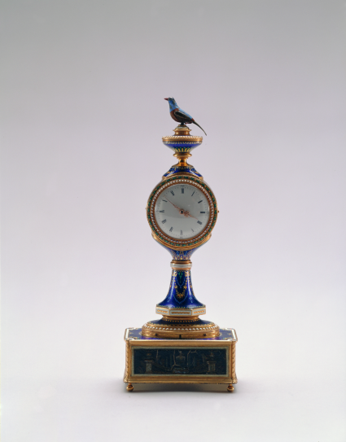
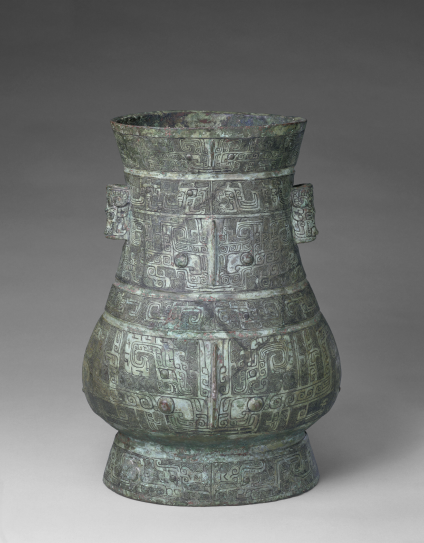
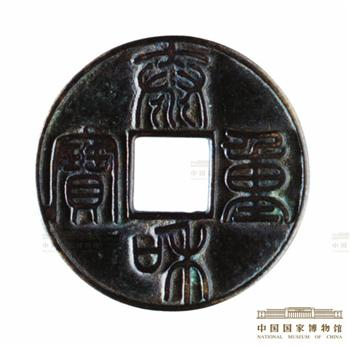

故宫博物院·数字文物库

故宫博物院·数字文物库

中国国家博物馆
七上
第1课 远古时期的人类活动
1我国境内目前已确认的最早的古人类是什么人？生活在距今多少万年？
答案：元谋人，距今约170万年。
2北京人的遗址位于什么地方？北京人生活在距今多少年？
答案：北京人遗址位于北京周口店龙骨山上。北京人生活在距今约70万—20万年。
3周口店北京人遗址有着怎样的地位？
答案：周口店北京人遗址是迄今所知世界上内涵最丰富、材料最齐全的直立人遗址之一，对研究人类起源和古人类演化的历史具有重要意义。
4山顶洞人生活的时间是距今多少年？
答案：山顶洞人生活在距今约3万年。
5山顶洞人掌握了哪两种技术？他们的用火情况是怎样的？
答案：山顶洞人掌握了磨光和钻孔技术。他们可能已经知道人工取火。